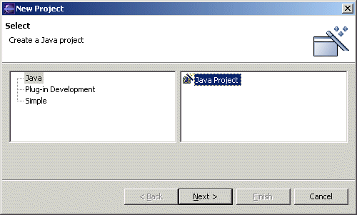
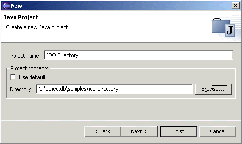
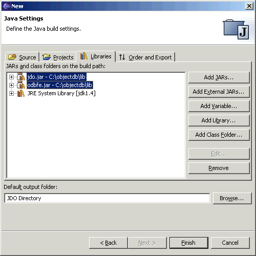
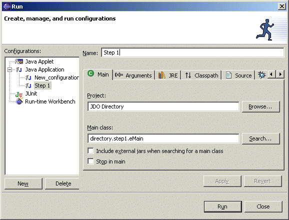
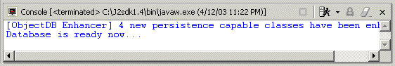
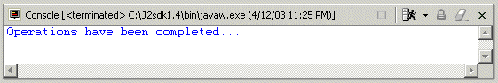
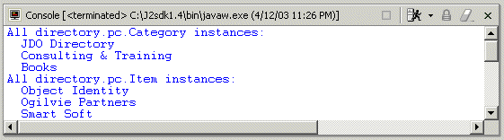
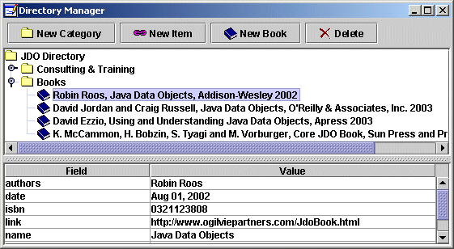

The JDO Directory demo has been tested with Eclipse 2.1.0.
Create the Project
From the main menu select File => New => Project....

Specify the Project Name and the demo Directory, and press Next:

Finally, select the Libraries tab and add jdo.jar and ObjectDB
jar file (odbfe.jar / odbse.jar / odbee.jar) located in the ObjectDB
lib directory using the Add External JARs... button.
Adding these JAR files is necessary for every project which uses ObjectDB and JDO:

Make sure that JRE System Library [jdk1.4] or above is specified, and then close the dialog with the Finish button.
Build & Run
You can build the demo by Project => Rebuild Project in the main menu (it might be done automatically when the project is created).
To run a step in the demo you can simply select its

Step 1
The expected output is:

The [ObjectDB Enhancer] message, indicating "on the fly" JDO enhancement of four persistence capable classes, is not shown if these classes are already enhanced.
Step 2
The expected output is:

Step 3
The expected output is:

Step 4

Copyright (C) 2001-2004 by ObjectDB Software. All rights reserved.
|